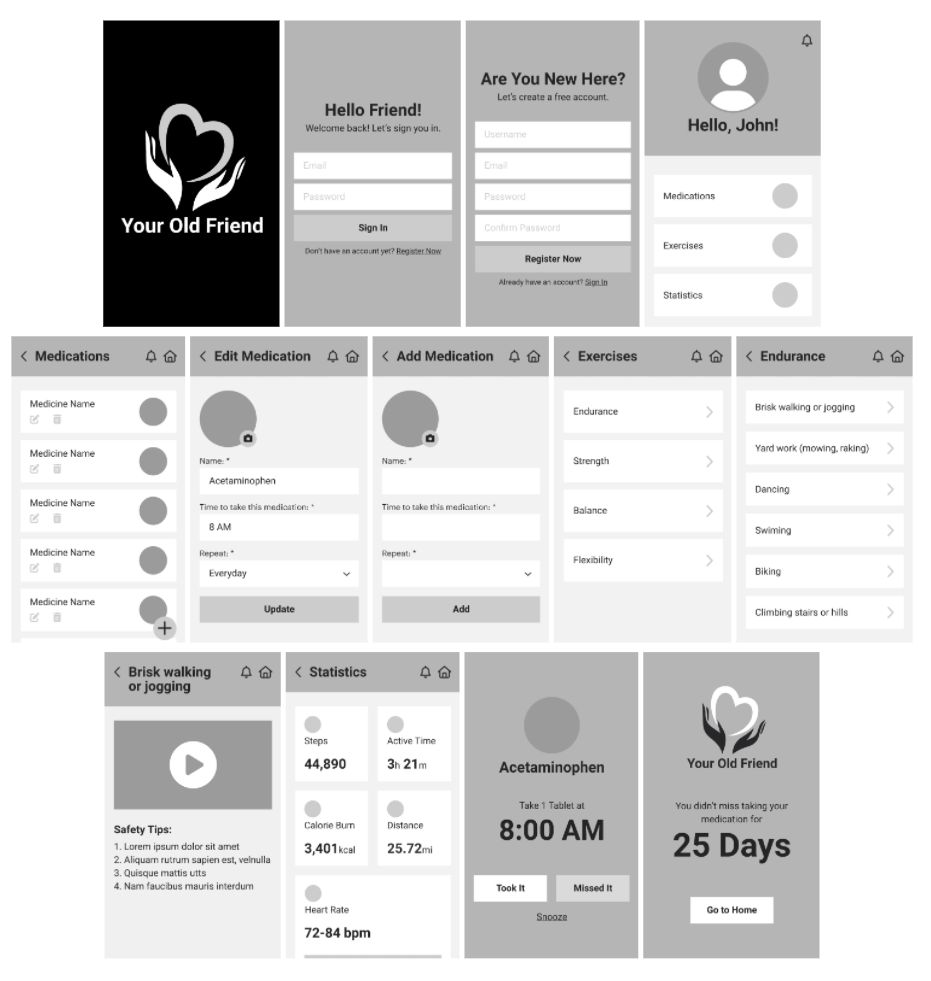

The problem
With an increasing human lifespan, the aging population has been growing and with that comes a
need for technology that is catered to help the elderly. An important aspect that is relevant to
the elderly will be health. Ensuring good physical health and physical well-being is one of the
main priorities for elderly people. Furthermore, the restrictions resulting from the COVID-19
pandemic have further demonstrated the need for ways to ensure the physical well-being of the
elderly, such as keeping track of their medication due to complications from COVID-19 or
providing guiding exercises to maintain their physical well-being amidst social distancing
restrictions.
Thanks to the prevalence of technologies such as smartphones, tablets or
wearable technology, the elderly have also become more comfortable using such technologies in their
regular lives. However, that does not mean that every app on the market is suitable for the
elderly.
Not only do such technology need to meet the needs of elderly people and provide functions that are
useful to their daily lives, they also need to be adapted to suit their limitations and way of life to
ensure better acceptance and effectiveness.
Our solution
Our app aims to help the elderly maintain physical well-being during the current pandemic by
tackling 2 problem areas: medication and exercise. Our app allows elderly users to input their
medication schedule and be reminded to take their medication according to that schedule.
Additionally, the app provides suitable exercise guiding videos for their age group and physical
abilities and for different forms of exercises that can be safely done at home. Elderly users
can also keep track of their progress.
Major components to be examined
To ensure that our app is well-suited for the elderly demographic, some major components that
need to be examined in detail include:
- The physical or cognitive limitations of the elderly
- The usability goals of the elderly
- The user experience goals of the elderly
- Ways to reflect such goals and limitations in our design
User Personas
To further understand the customers of our application, we have come up with some profiles to represent
what we would call our ideal users, based on the researches conducted earlier.


User Flow
The diagram below shows how our app will function. The user goals helped us design an app that will
satisfy our user.
Sketches
After completing the user flow, we started with a sketch of the basic design of our app,
in order to identify the basic layout and necessary pages.
Wireframes
With the help of our sketches, we then formalized the design of our app using wireframes.

Color Palette
During our research process, we found that we should avoid blue in our color palette when designing for
the elderly. Thus, we have opted for a set of colors without blue and are soft yet eye-catching. This is
so that while the elderly feel comfortable using the app, they are also engaged and can catch the
necessary information presented to them in the app.

Typography
Roboto was chosen as the font for our app because it is a sans serif font, which is simple and
easy
to read. Hence, it is more suitable for the elderly, who may have poorer visual acuity or diminished
eyesight. We have also chosen larger font sizes for the same reason.
The quick brown fox jumps over the lazy dog
The quick brown fox jumps over the lazy dog
After going through the different stages of the design process, we have landed on the final design of our
app.
From our research, we found that a study was conducted to identify the barriers influencing the adoption
of health apps for the older adults and their results found four categories of barriers: cognition,
motivation, physical ability and perception. Physical ability, perceptual barriers and complexities of
medical conditions, such as diminished eyesight related to diabetes or deteriorated motor skills as a
result of rheumatism, can cause errors in user interaction. The elderly may also have a longer learning
time.
Thus, to cater to the elderly demographic, we have made foreground elements such as buttons and text a
contrasting color from their background for an easier read. The size of the buttons have also been
created to be larger than the size of a finger so that it is easy to tap. Interactions with the app have
been kept relatively simple for greater learnability and memorability, with most of the interactions
being button clicks and the rotation of the phone to watch videos full screen. The information on each
page is kept short and clear so that elderly users will not be bombarded with too much information and
will have an easier time focusing on the important information.
Sign In & Register
The first page of the app is the sign in or register page. Their designs are similar to many other
apps
so that elderly users can make use of their existing knowledge and would not have to learn anything
new.
Home
After logging in, the user will be brought to the homepage. The homepage is kept simple and succinct
to indicate the 3 main sections: Medications, Exercises and Statistics, and does not provide any
irrelevant information for better clarity.
Medications
The Medications page provides a concise list of medication added by the user and allows the user to
input critical information including the time to take the medication and how often the medication
should be taken. Users can also upload a photo of their medication so that it will be easier for the
elderly to identify which medication they should take at that point based on shape and color,
instead of having to match the name of the medication to the medication itself.
Notifications
When a medication needs to be taken, the app will have a notification to indicate the name of the
medication, its photo, its dosage and time to be taken. The user will then have the option to
indicate if they have taken their medication or they have missed it. They can also opt to snooze the
reminder so that if they do not have the medication on hand, they will still be reminded again soon
to take it. This is helpful for elderly users who may have the tendency to forget to take their
medication if they do not have it with them at the point of the notification.
Exercises
The Exercise page also provides a concise list of different types of exercises that are suitable for
people aged 50 and above. Choosing a specific form of exercise will bring the user to a page with a
guiding video and safety tips. This ensures that elderly users are performing these exercises
safely, especially since they are more prone to injuries if these exercises are not done
properly.
Statistics
The Statistics page gives the users an overview of their progress. Based on our research, wearable
technologies are accepted by younger elderly, aged 55 to 70, so statistical information collected
from
their wearable technologies can also be displayed here.
Conclusion
This mini-project has allowed us to learn the importance of understanding your users and
understanding the core problems. Only then can your solution be targeted and catered to
specific users. We must admit, the process of
doing market research, conducting surveys and analyzing the users through journey maps and user
personas was really a great chance to study User Experience and User Interaction.
It has also made us realize how insufficient it was to simply classify all our
user base into one single ‘the elderly’ group.
All in all, this has been a fruitful learning experience for our team.